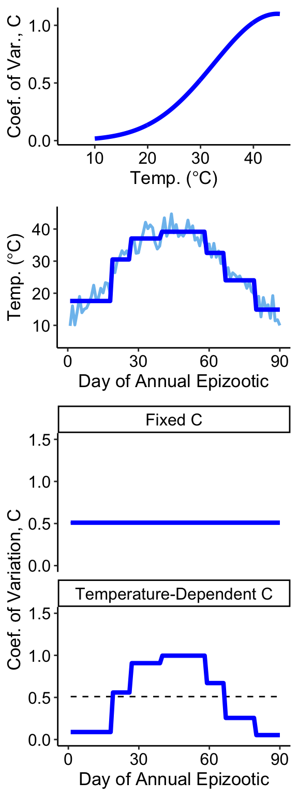

Code
# Source functions and static objects
source("supp_funcs.R")# Source functions and static objects
source("supp_funcs.R")In this supplement, we will show alternative simulations of the host-pathogen and host-demography models with different assumptions.
First, we will generates the same temperature regime as used in the main text, which will be used throughout this supplement for consistency and to remove any effect of the specific temperature regime.
set.seed(5)
# Create a realistic temperature sequence:
time_seq = c(1:90)
T_temp = 40 * exp(-0.5 * (time_seq + 10 - 55)^2 / 800) + rnorm(length(time_seq), 0, 2.5)
# plot(T_temp ~ time_seq, type = "l")
# Fit a piece-wise constant (regression tree)
piece_mod = rpart(T_temp ~ time_seq,
control=rpart.control(maxdepth=5, cp=.0001))
# Quick check on results:
T_piece = predict(piece_mod, data.frame(time_seq = time_seq))Here, we generate a figure summarizing the effect of temperature on CV during the annual epizootic, which draws upon the piece-wise pattern of temperature over time. Note that we parameterized the effect so that we maintain an average CV=0.5, to be consistent with the simulation in the main text.
# Smooth temperature sequence:
T_seq = seq(0, 45, by = 0.1)
# CV Gaussian function parameters
a_CV = 1.1
b_CV = 44.5
c_CV = 12
# Gaussian functional relationship (smooth)
CV_t = a_CV * exp( -0.5 * ((T_seq - b_CV)/c_CV)^2 )
# plot(CV_t ~ T_seq, type = "l",
# xlab = "Temp (C)", ylab = expression("C"["(T)"]))
# Gaussian functional relationship (based on piece-wise temperature)
CV_piece = a_CV * exp( -0.5 * ((T_piece - b_CV)/c_CV)^2 )
mean_CV = round(mean(CV_piece),2)
print(paste0("mean of CV_piece = ", mean_CV))[1] "mean of CV_piece = 0.51"plot_S1.1 = CV_plot_func(CV_t, CV_piece, T_seq)
grid.arrange(plot_S1.1)
set.seed(seed = NULL)
cv_positive_sims = run_full_sim(time_seq)
str(cv_positive_sims) num [1:51, 1:2, 1:2] 18.1 82.06 3.12 17.15 82.39 ...
- attr(*, "dimnames")=List of 3
..$ Gen : chr [1:51] "1" "2" "3" "4" ...
..$ Class: chr [1:2] "S" "P"
..$ CV : chr [1:2] "Fixed C" "Temperature-Dependent C"# Returns an array
## Gen == generation (i.e., year)
## Class == Susceptible (S), Pathogen (P)
## CV == whether CV was fixed or temp-dependentPlot the output:
plot_S1.2 = multi_gen_plot(cv_positive_sims)
grid.arrange(plot_S1.2)
print(paste0("Median host density, Fixed C = ",
round(median(cv_positive_sims[1,1,1]), 3)))[1] "Median host density, Fixed C = 18.1"print(paste0("Median host density, Temp-Dependent C = ",
round(median(cv_positive_sims[1,1,2]), 3)))[1] "Median host density, Temp-Dependent C = 18.1"We can see however that while the exact oscillation patterns of the multi-generational dynamics are sensitive to the pattern of the CV-temperature relationship, the equilibriums are cycling around a stable equilibrial point that seems to be determined by the average CV across the epizootic period.
For example, below we slightly alter the CV-temperature relationship. In this case, the average CV is still 0.5, as in Figure 1 and Figure 2. However, the max CV is slightly lower (0.9), and the CV at low and high temperatures is a bit higher.
# Smooth temperature sequence:
T_seq = seq(0, 45, by = 0.1)
# CV Gaussian function parameters
a_CV = 0.9
b_CV = 44.5
c_CV = 15
# Gaussian functional relationship (smooth)
CV_t = a_CV * exp( -0.5 * ((T_seq - b_CV)/c_CV)^2 )
# plot(CV_t ~ T_seq, type = "l",
# xlab = "Temp (C)", ylab = expression("C"["(T)"]))
# Gaussian functional relationship (based on piece-wise temperature)
CV_piece = a_CV * exp( -0.5 * ((T_piece - b_CV)/c_CV)^2 )
mean_CV = round(mean(CV_piece),2)
print(paste0("mean of CV_piece = ", mean_CV))[1] "mean of CV_piece = 0.51"plot_S1.3 = CV_plot_func(CV_t, CV_piece, T_seq)
grid.arrange(plot_S1.3)cv_positive_sims2 = run_full_sim(time_seq)
plot_S1.4 = multi_gen_plot(cv_positive_sims2)
grid.arrange(plot_S1.4)